欲读正文前，可以先带上耳机轻轻点击小编最近单曲循环的一首歌~~然后细细回味上周俱乐部会议发生的精彩瞬间~~
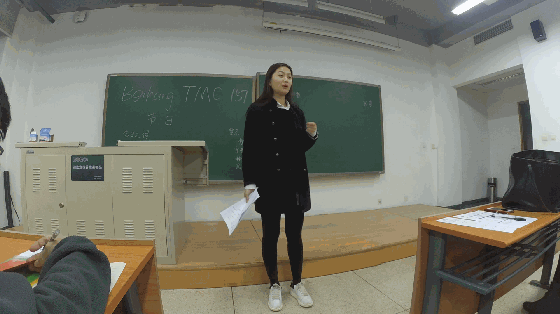
上周五的晚会因为美女主持汪菲的倾力加盟
琪琪的到场，二姐的准备，深深的难得到访，
还有众多爱好交流的头马小伙伴们的热情参与
在那个本该是寒冷的夜晚变得格外温暖
“真的是一场很棒的会议呢“---- the great Gasby

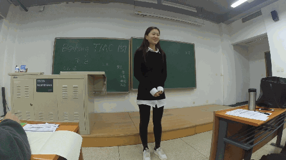
美女主持人汪菲第一次来到北航头马就勇挑大梁（深深你这批皮条拉的，给你82分别骄傲知道不？），而且第一个迫不及待的走上舞台，落落大方，气质非凡。一个和父母一起去旅游的小故事不断的在提醒我们多陪陪身边的父母，陪他们去度过一些浪漫温馨的岁月，多创建一些属于你们共同的记忆，很棒。“把每一天都过的像是节日一样~”，正解！撒花~~
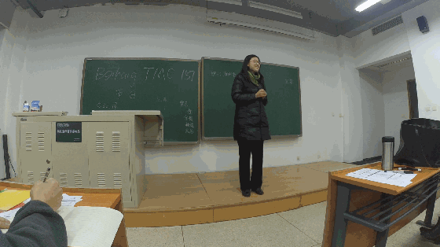
“巧笑倩兮，美目眇兮。”抱歉，看完曹丽的演讲，基本我都忘了她具体讲了什么了，找了好久才找到这两句我认为比较合适的语句来形容她的笑容，真的好甜 ，隔着屏幕再看都醉了，面对主持人一连串的问题却依然不慌不忙的淡定的全部一一作答，而且还鼓励在座的每位单身狗积极过好自己一个人的生活，善待自己才能在未来的远方可以和他人相处，当之无愧的Best,尤其是结尾出人意料的在并未要求的情况下默默记下所有人的演讲口语中出现的停顿等数目，真的非常用心，天呐，这样的姑娘竟然还是单身，买噶等！你说你要求的对象要有追求和性格外向，我觉得好巧啊，别的我都不及格，但就这两条我自认为还算凑合，你看...？
，隔着屏幕再看都醉了，面对主持人一连串的问题却依然不慌不忙的淡定的全部一一作答，而且还鼓励在座的每位单身狗积极过好自己一个人的生活，善待自己才能在未来的远方可以和他人相处，当之无愧的Best,尤其是结尾出人意料的在并未要求的情况下默默记下所有人的演讲口语中出现的停顿等数目，真的非常用心，天呐，这样的姑娘竟然还是单身，买噶等！你说你要求的对象要有追求和性格外向，我觉得好巧啊，别的我都不及格，但就这两条我自认为还算凑合，你看...？
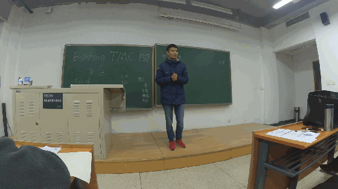
盖茨比讲的是自己为什么喜欢冬天喜欢春节喜欢寒冷喜欢下雨天，至于其他的，抱歉，我真的没怎么觉得哎，所以啊，还是要多穴习一个，知道不知道啊？
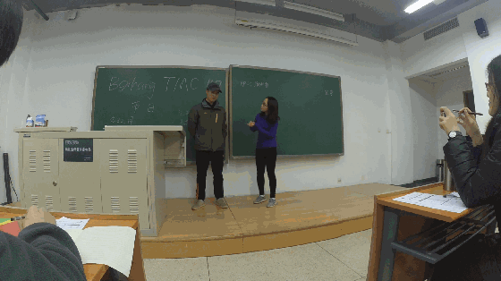
这不是一个通常的故事，这是一个女追男的故事，为了在单身节前脱单，女生向她的男神勇敢的告白，希望能够加微信？Nonono, too young,som**河蟹**aive 一起出去吃个饭？小儿科，一起出去游玩一次？得知我们的Flair名草有主以后，我们美丽的路美丽仍不死心，誓要抱的男神归，“能不能松松土啊”？哈？？抱歉，其实我还未成年呢，不是很懂啊？能再讲一遍么？面对这么猛烈的攻势，Flair仍然是雷打不动，顾左右言其他，不断搬出女朋友来镇压，可以，很强，这个的确是很考验呐！不过鉴于flair全程都只讲那么一两句话，所以小编想再次把和送给我们精彩发挥的路美丽~~~因为人生如戏，纯靠演技啊！真的很厉害~！！
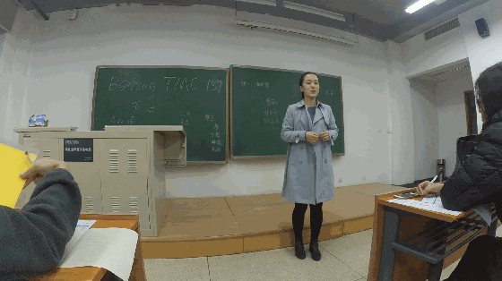
原来北方过年都是这样子的啊，从小在南方长大的小编表示：三缺一来不来？不过从小到大的确是不知饺子为何物，但是听了二姐“筷叉饺子试硬币”的故事后觉得真的挺有意思的，吃个东西还能这么多游戏，这波我服，好想知道有没有那么一次一个不小心把硬币吃进去了的啊？
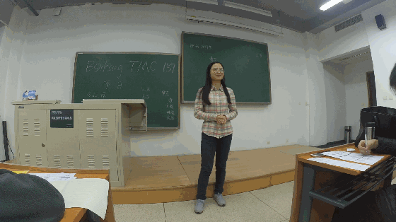
师傅对于中外节日的差异以及对于我们的影响这种比较学术的问题回答的十分机智，一番有理有据无可辩驳的分析（强大的工科女）以后找到了问题的根本-那就是开心就好啦，侯嗨森？那就是节日的意义嘛！（话说虽然这马上要到的一波节日并没有假期但是大家为什么这么嗨森？）
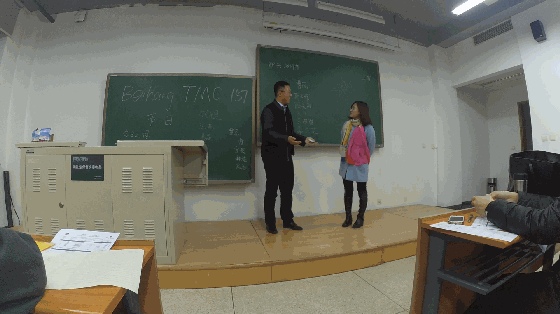
毫无疑问是全场最佳cp，单身美女帅哥强凑cp的剧情看来以后得zang点心了，因为真的是“没有经验啊！！”立芝的撒娇真的超萌很可爱！而柔情汉子钱锟的欲拒还休的那种忸怩真的让大家都笑开了花，就像他中途突然爆出的那句：“这一题对于单身狗来说真的好难啊！”其实我们也是一样的啊，但是最后还是被我们的常美女完败，的确，小编也表示每次一听到她的声音就已经在心底里重复了一万遍：“好吧我愿意，什么我都答应你”。

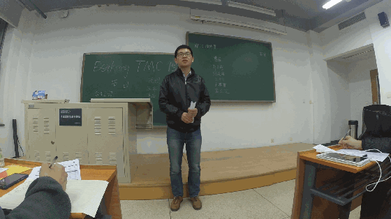
投身科研的博士（崇敬ing），最大的心愿的能有一个发明让所有人都用的上，加上也许并未充分准备但是依然能在头马的舞台上非常精彩的完成你的第一次破冰演讲的“不安分”的安东，欢迎加入北航头马！今晚你的发挥真的非常非常出色！！
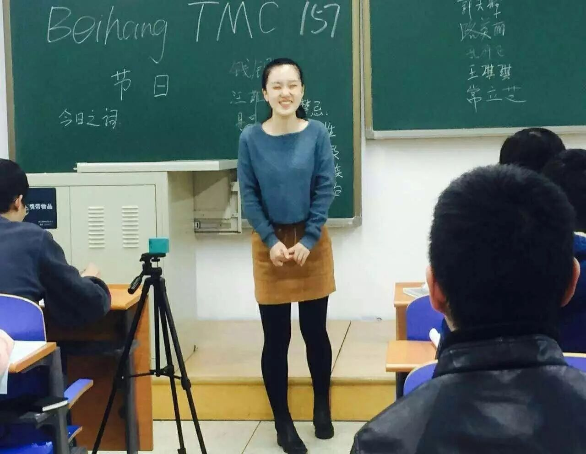
作为一枚“航发铝”（不知道？后悔没来听二姐的故事了吧？）Amy真的将她的对专业和热爱融化在了演讲的字字句句里，妙语连珠段子手，谈吐优雅东北味。还有这蜜汁灿烂的笑容，卡哇伊，让我冷静下先。听罢演讲，只想对二姐你（不可描述的事情）。


最佳即兴演讲者-曹丽
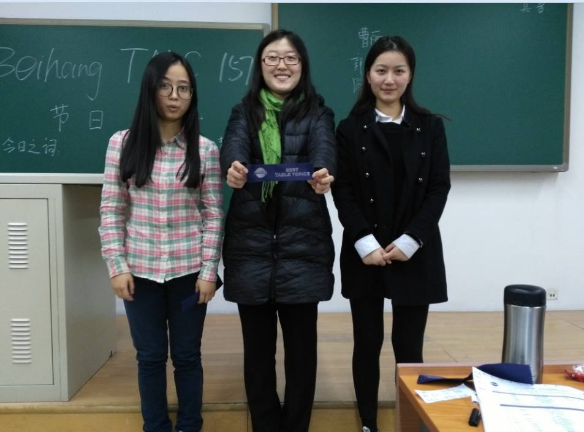
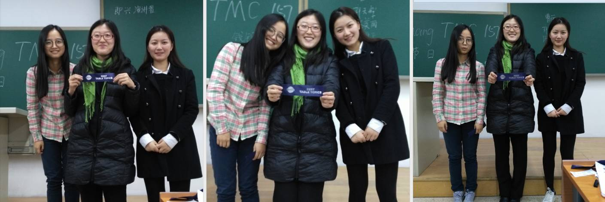
最佳备稿演讲者-孔祥飞
最佳新人演讲者-安东
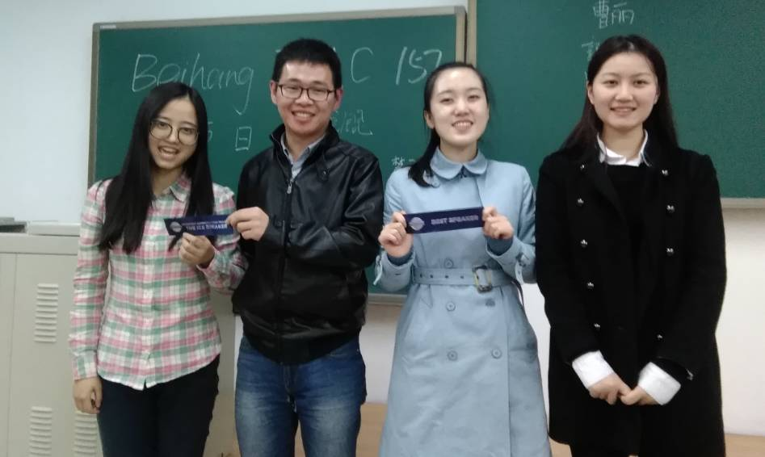
最佳EVA-郭天辉
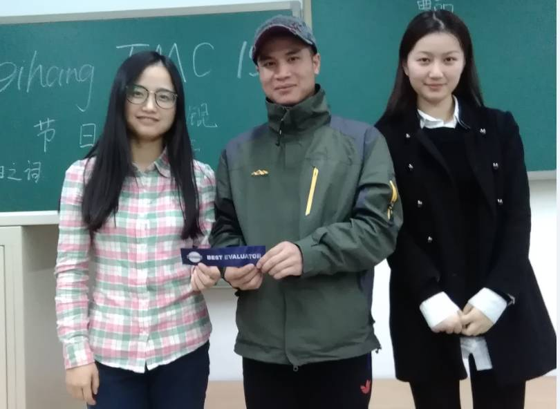
OMG,Flair今晚的发挥绝对是现象级的，从几个月前第一次到头马舞台来的默默无闻，连讲话都断断续续，到现在一口流利的表达，flair真的进步是飞常大！语法官点评包袱不少，让人印象深刻不说，还一上台就抛出小王子里摘下帽子所有人都必须鼓掌的情节来让大家陷入其设下的陷阱，原来连这帽子都被套路了天哪噜，自信的发言，认真完美甚至逐字逐句的点评，毋庸置疑的今晚之星~！
来自北航Mike博士又名马爸爸的自拍
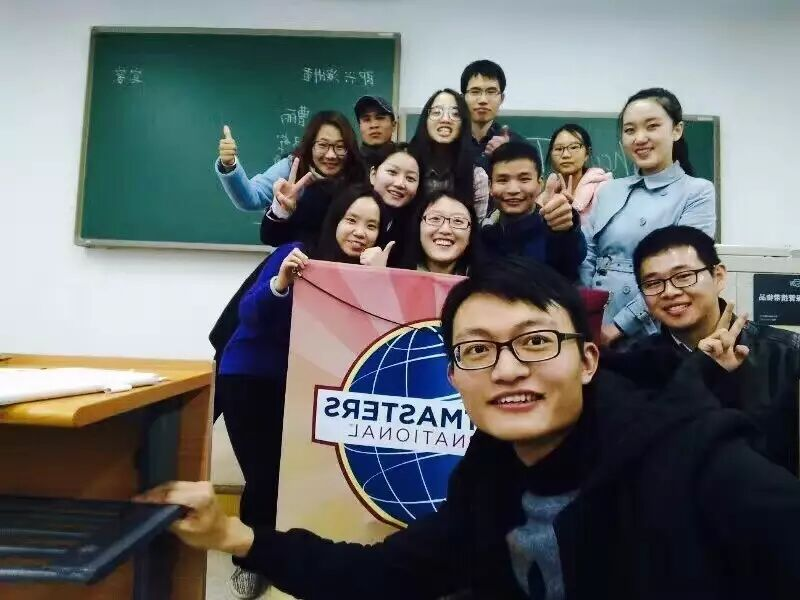
最后，北航头马是一个认真的，负责的俱乐部
任何喜欢中文，或者英文演讲的都可以在每周五晚到我们头马俱乐部做客
我们旨在让每个演讲者的都能都在台上流利的表达自我
享受表达带来的乐趣
以上
TT-wangfei 链接：http://pan.baidu.com/s/1geXQ3sf 密码：fhec
TT-Yp 链接：http://pan.baidu.com/s/1c2olCLM 密码：hvkv
TT-CaoLi 链接：http://pan.baidu.com/s/1slUy5fZ 密码：ltf7
TT-Flair && Lu MeiLi 链接：http://pan.baidu.com/s/1slvSAEL 密码：vrlg
TT-Amy 链接：http://pan.baidu.com/s/1c1EtKYW 密码：sz7k
TT-QianKun && ChangLiZhi 链接：http://pan.baidu.com/s/1hsujf6k 密码：g1w8
TT-Kiki 链接：http://pan.baidu.com/s/1ge2cwlt 密码：793s
CC-Antonio 链接：http://pan.baidu.com/s/1kVbgfGV 密码：qeuq
https://mp.weixin.qq.com/s/2uFWi6oedeu7GIRcphLFvA
本页为抢救式本地归档，图文已永久保存。